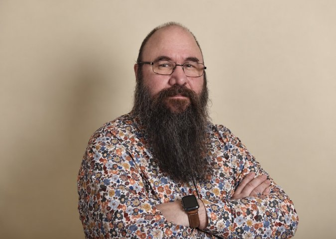

Lebenslauf
Persönliche Daten
- Name:
- Mark Petersen
- Nationalität:
- Deutsch
- Wohnort:
- Hamburg

Profil
Ich bin eine Leitungskraft mit Schwerpunkt in der ambulanten Pflege und fundierter Erfahrung im Aufbau und in der Führung von Pflegediensten. Einen ambulanten Pflegedienst in Hamburg habe ich eigenständig aufgebaut: von der Zulassung und Personalgewinnung bis zu effizienten Strukturen im operativen Alltag. Dabei integrierte ich auch die von beteiligten Gesellschaftern eingebrachten Patientenbestände und Mitarbeitenden in die von mir entwickelte Betriebsorganisation.
Meine besondere Stärke ist vorausschauendes Denken: Ich entwickle aus einem Ziel einen klaren, umsetzbaren Weg und behalte dabei auch die nächsten zwei bis drei Jahre im Blick. Ich erkenne organisatorische und wirtschaftliche Verbesserungspotenziale, setze Prioritäten und leite daraus konkrete Schritte ab. Diese Orientierung vermittle ich nachvollziehbar, um mit Geschäftsführung und Team eine gemeinsame Richtung zu entwickeln.
Dabei verbinde ich Fachwissen, Gesetzeskenntnis und Teamführung mit einem klaren Blick für Qualität und Wirtschaftlichkeit. Mein Führungsstil ist fachlich fundiert, verbindlich und auf Augenhöhe. Ziel ist eine verlässliche Organisation, die Mitarbeitenden Orientierung gibt und die bestmögliche Versorgung der Klient*innen im häuslichen Umfeld sicherstellt.
Meine Kompetenzen und mein Führungsverständnis gehen über das klassische Aufgabenprofil einer Pflegedienstleitung hinaus. Ich möchte meinen Standort vom ersten Tag an mit vollem Engagement eigenständig führen und die gesamte operative und strategische Verantwortung übernehmen. Voraussetzung dafür sind klare Zuständigkeiten sowie umfassende Entscheidungs- und Weisungsbefugnisse in meinem gesamten Arbeitsbereich. Vertragsrecht und Finanzen einschließlich Buchhaltung verbleiben bei der Geschäftsführung.
Weiterbildungen
- 05/2021 – 02/2022: Einrichtungsleitung (Niveaustufe Vertiefung)
- 10/2020 – 04/2021: Leitende Pflegefachkraft (Aufbaustufe)
- 08/2019 – 10/2020: Verantwortliche Pflegefachkraft (Basisstufe)
- 04/2017 – 10/2017: Fachqualifizierung zum Sachbearbeiter im Gesundheitswesen
Berufserfahrung
Seit 02/2025: BG Klinikum Hamburg – Pflegefachkraft
Die Beschäftigung bestand auch während der nachfolgend genannten Tätigkeit im Juli 2026.
JULI 2026 – Zwischenzeitliche Beschäftigung
Pflegedienstleitung in der stationären Pflege
Kurze, zeitlich parallele Tätigkeit als Pflegedienstleitung im Domizil Zum Appelbütteler Tal, Alisea Domizil GmbH, Hamburg.
12/2023 – 01/2025: Tagespflege in Rahlstedt, Hamburg – als PDL
06/2020 – 11/2023: Optimal Pflegeteam Hamburg GmbH & Co. KG, Hamburg – zunächst Pflegedienstleitung, später Einrichtungsleitung
- Aufbau und Zulassung eines neuen ambulanten Pflegedienstes
- Projekt- und Qualitätsmanagement
- HR-Bereich, Teamführung, Einarbeitung und Ablaufentwicklung
- Pflegevisiten selbst durchgeführt und bei weiteren Pflegevisiten durch eine Pflegefachkraft unterstützt; interne Fortbildungen und fachliche Einzelgespräche selbst durchgeführt
- Steuerung des operativen Tagesgeschäfts
Nachdem der Geschäftsführer selbst die Qualifikation für die Einrichtungsleitung erworben hatte, entschied die Geschäftsführung, die Leitungsaufgabe selbst zu übernehmen. Damit endete meine Tätigkeit.
10/2019 – 05/2020: ZBI-Gruppe, Hamburg (weiterbildungsbegleitend) – Pflegefachkraft – Intensivpflege (ambulant)
- Beatmungspflege, Trachealkanülenmanagement
- Prophylaxen (Dekubitus, Pneumonie)
01/2019 – 03/2019: Kursana, Hamburg – Wohnbereichsleitung Demenzstation
- Teamführung, Pflegeplanung, Angehörigenberatung
07/2015 – 11/2015: Hamburger Gesundheitshilfe, Hamburg – Pflegefachkraft & Teamleitung
08/2013 – 06/2015: Maike Hansen UG, Hamburg – Pflegefachkraft – Intensivpflege (ambulant)
08/2011 – 07/2013: Seniorenzentrum Hagenbeckstraße, Hamburg – beschäftigt als Gesundheits- und Pflegeassistent (GPA), parallel Ausbildung zum Altenpfleger
Parallel beschäftigt während beruflicher Neuorientierung
15.07.2023 – 10.2023
Amarita Hamburg – Pflegedienstleitung
Mitwirkung an der Projektentwicklung im Bereich ambulante Dienstleistungen (Demenz-Wohngemeinschaft)
Berufliche Neuorientierung
12/2015 – 03/2017
Bewusste Auszeit zur privaten und beruflichen Neuausrichtung mit anschließender klarer Fokussierung auf Leitungsaufgaben in der Pflege.
Ausbildung
- 08/2011 – 07/2013: Seniorenzentrum Hagenbeckstraße, Hamburg – Examinierter Altenpfleger
- 10/2009 – 04/2011: Pflegeheim Bugenhagenhaus, Hamburg – Gesundheits- und Pflegeassistent
- 01/1992 – 01/1995: Sekundarbildung Oberstufe, Hamburg – Maurer (Lehre zum Gesellen)
Stärken
- Autonome, lösungsorientierte Führung
- Hands-on-Mentalität mit Überblick
- Erfahrung in operativer und strategischer Gesamtverantwortung
- Kompetenz im Aufbau neuer Strukturen und Teams
- Klare Kommunikation & Teamförderung
IT- und Fachkenntnisse
- MS Office (Word, Excel, Outlook)
- Branchenwissen (SGB V, SGB XI, Pflege-Qualitätssicherung)
- Personalmanagement & Arbeitsrecht
- Erfahrung mit Pflegedokumentationssystemen
Hamburg, November 2026
Mark Petersen